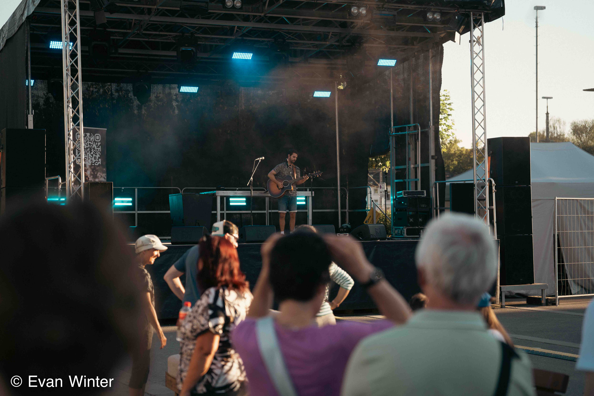

Projekte
Ausgewählte Arbeiten
Eine kleine Auswahl aus Event-, Konzert- und Reportagearbeiten mit klarer Bildsprache.

Event- und Konzertfotografie
Felix Jaehn
Ein Projekt, das bewusst groß und dunkel inszeniert ist, um die Energie eines Live-Auftritts visuell greifbar zu machen.
Jahr2026
OrtKonstanz
Projekt öffnen

Atmosphärische Eventdokumentation
Seenachtsfest Konstanz
Festival, Besucher, Kulisse und Feuerwerk in einer cineastischen Bildfolge am See.
Jahr2024
OrtKonstanz
Projekt öffnen

Foto & Video
Fantastical Kreuzlingen
Umfangreiche Dokumentation mit starken Kontrasten zwischen Show, Publikum und Nahaufnahmen.
Jahr2024
OrtKreuzlingen
Projekt öffnen

Fotografische Begleitung
Start-up Gottesdienst
Ruhige, respektvolle Reportage mit Fokus auf Stimmung, Begegnung und räumlicher Tiefe.
Jahr2025
OrtVeranstaltung
Projekt öffnen

Foto / Video
Godi Kreuzlingen
Eine kompakte visuelle Dokumentation mit klaren Situationen und natürlichem Licht.
Jahr2024
OrtKreuzlingen
Projekt öffnen

Foto / Video
Godi Amriswil
Leise, konzentrierte Eventfotografie mit editoriellem Blick auf Menschen und Raum.
Jahr2024
OrtAmriswil
Projekt öffnen